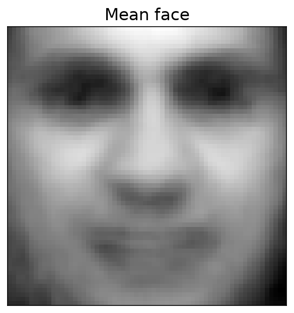
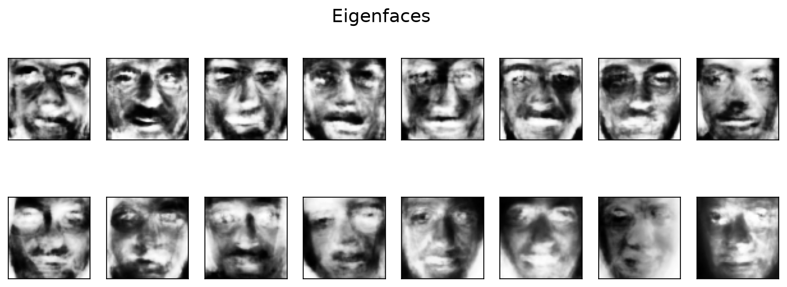
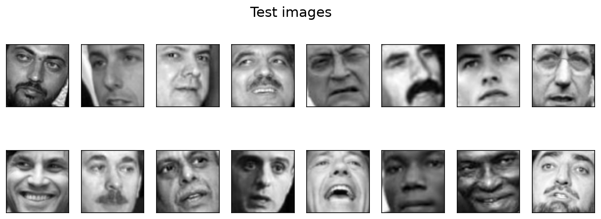
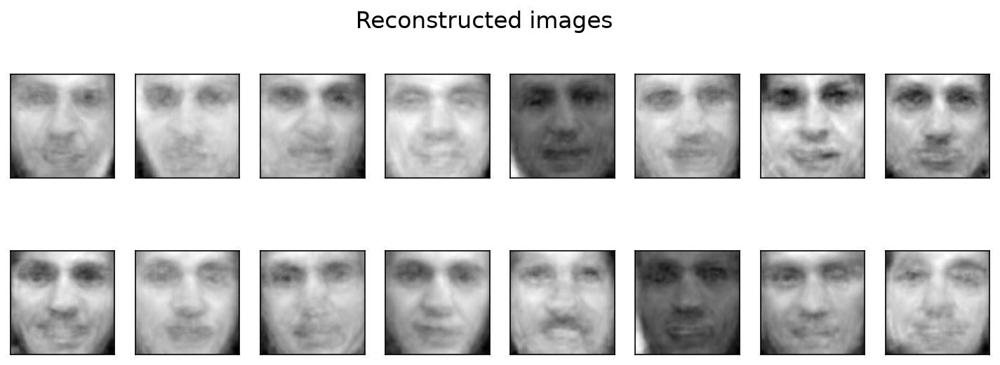

A classic computer vision technique that uses PCA to find the directions faces vary along the most, then reconstructs and compares faces using only a small number of those directions.
A face image is just a big grid of pixel values, but most of that information is redundant, since every face shares the same basic structure (eyes, nose, mouth in roughly the same places). Eigenfaces, from Turk and Pentland's 1991 paper, asks: what if we found the handful of directions faces vary the most along, and represented every face as a combination of just those?
The mean face below is the average of all 100 training faces blended together, a smooth, feature-less baseline every other face is measured against.

The eigenfaces themselves look ghostly, since each one represents a direction of variation rather than a real person. Together, they form the basis every face in the dataset can be reconstructed from.

Reconstructing unseen test faces from just those eigenfaces produces recognizably face-like images, but with less individual detail than the real test photos. This is the honest limitation of the method: with only 100 training faces, the learned "face space" doesn't fully capture features specific to people the model has never seen. More training faces would sharpen the reconstructions.


Original test faces (top) vs. their reconstructions from the eigenfaces alone (bottom).